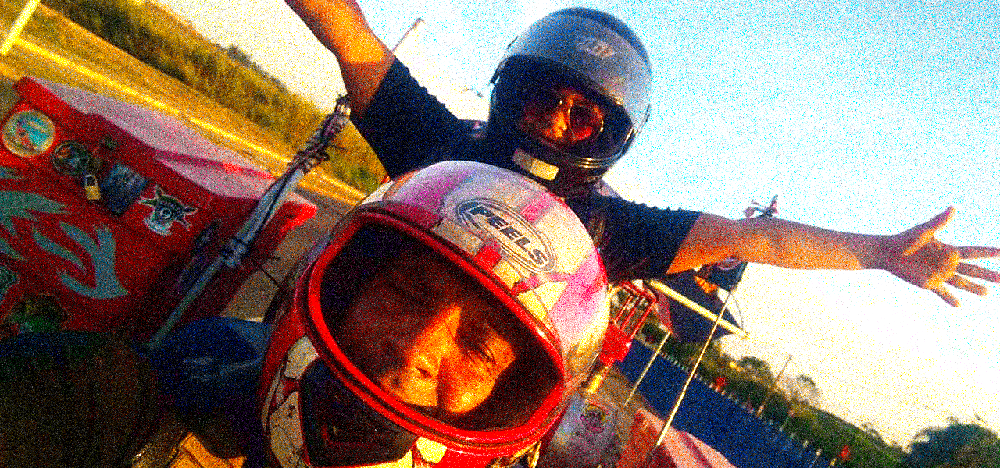

Origem do Trivale
Por um Triz
O Trivale quase não aconteceu como conhecemos hoje, pois Zeca chegou a cotar algumas possibilidades de moto de 2 rodas em sua jornada, mas desde a infância, acredita-se que os diretores responsaveis pelo Trivale, que são: Foca(Edson) e depois Zeca, já se interessavam pelo veiculo Triplo.
Fonte: gauchazh.clicrbs.com.br - Uma paixão que começou com um triciclo infantil [imagem editada]
Antes que Zeca fosse capaz de firmar qualquer negócio com uma moto de 2 rodas, ele Tripulou por Trickclubs ainda de gol bola, onde sofreu certo preconceito de seus companheiros Triciclistas por participar de um Trickclub de carro, e isso o deixou muito Triste.
Fonte: Facebook Original do Zeca - Ele quase virou um Motoqueiro Genérico! [imagem editada]
Fonte: Facebook Original do Zeca - Epoca que andava em Trick Clubs de gol bola [imagem editada]
Sendo assim, Zeca chegou a conclusão que o Triciclo era seu verdadeiro foco. Com um pequeno investimento de seu filho André, junto a algumas vendas de bens materiais de alto valor pessoal e o pagamento de taxas Tributárias, finalmente conseguiu realizar seu grande sonho de participar de um Trickclub com um Triciclo próprio.
O Triciclo em questão já foi bem apresentado no capitulo O Grande Dragão Vermelho.
Fonte: Facebook Original do Zeca - O Grande Dragão Vermelho
Depois da aquisição, Zeca deu inicio a sua jornada na imensa comunidade reconhecida internacionalmente hoje como Trivale se tornando o Maestro do Trivale do grupo, junto de Foca(Edson), e guiou sua Tripulação rumo ao sol da maneira mais justa possivel.
Fonte: Facebook Original do Zeca - A Jornada Infinita
Trilhando novos horizontes
Sem fins lucrativos, a comunidade do Trivale é composta por Tripulantes da velha guarda que são em sua maioria pessoas nobres, responsaveis, humildes e genuinas.
Não levou tempo até perceberem a importancia social que a Tribo desempenhava na sociedade, começando um então tardio processo de inclusão, no qual as mulheres recebem um papel importante e passam a ter um simbolo próprio de coração, representando o carinho e o amor materno, diferente do já comum escudo circular que era até então era o unico brasão sem genero do grupo.
Fonte: Facebook Original do Zeca - A Jornada Infinita
Graças a essa nova mentalidade, a Tribo já tem planos futuros de incluir uma diversidade LGBTQ+ em seu sistema de igualdade social e finalmente ser mais abrangente e igualitaria.
Fonte: Facebook Original do Zeca - O Companheirismo
Continue lendo >
Capitulo 2
Encontros Triunfantes
Pagina 4 de 6